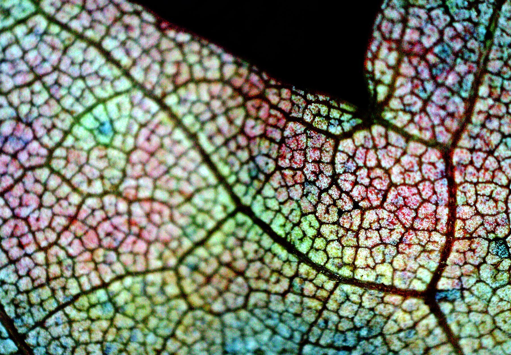
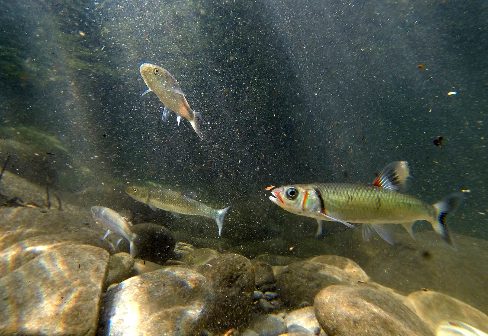
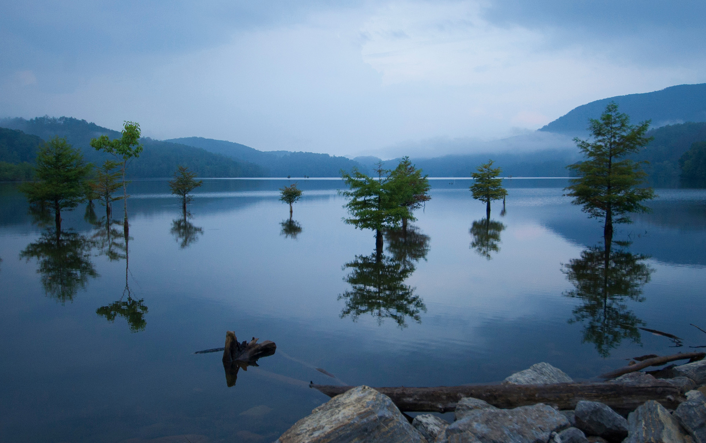
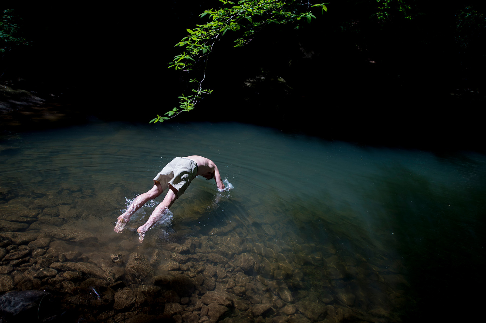
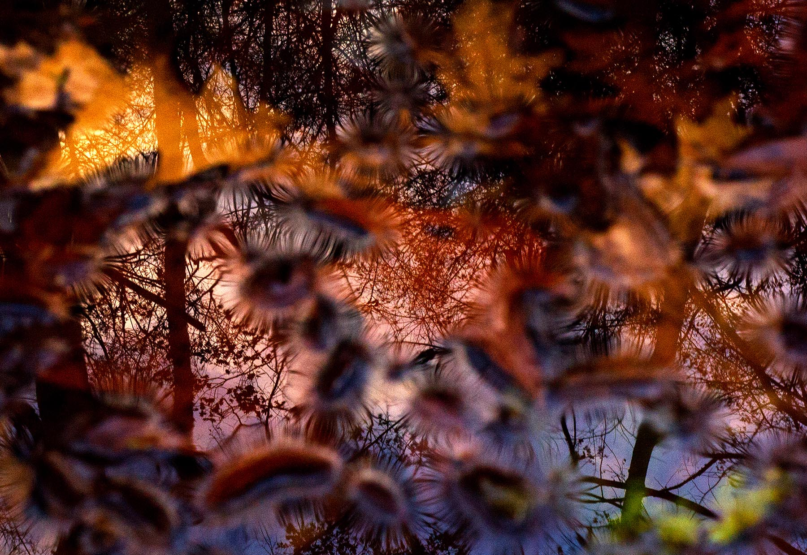
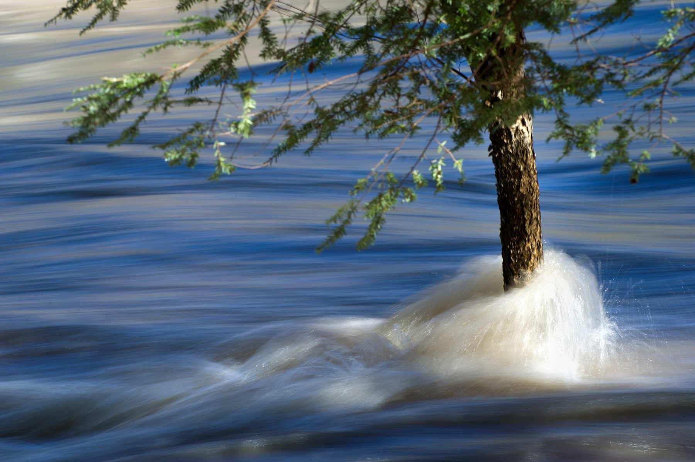
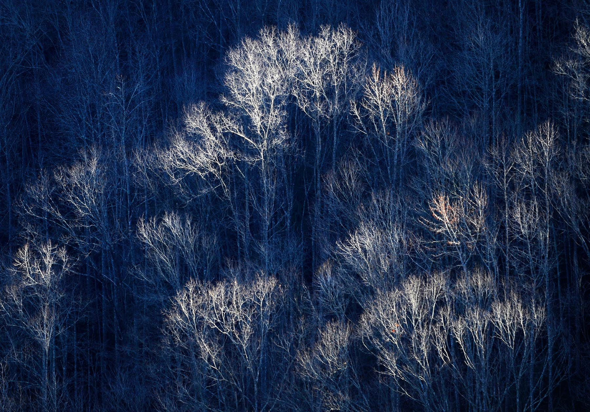
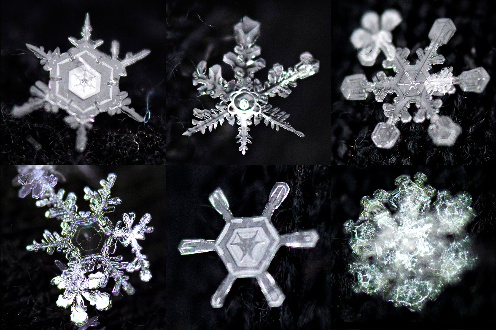
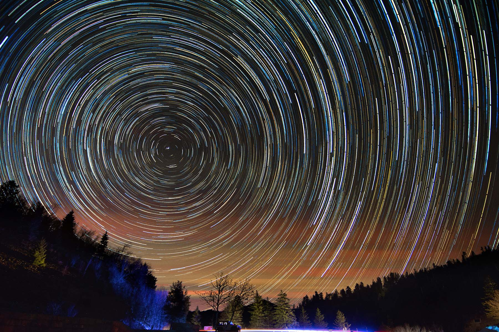
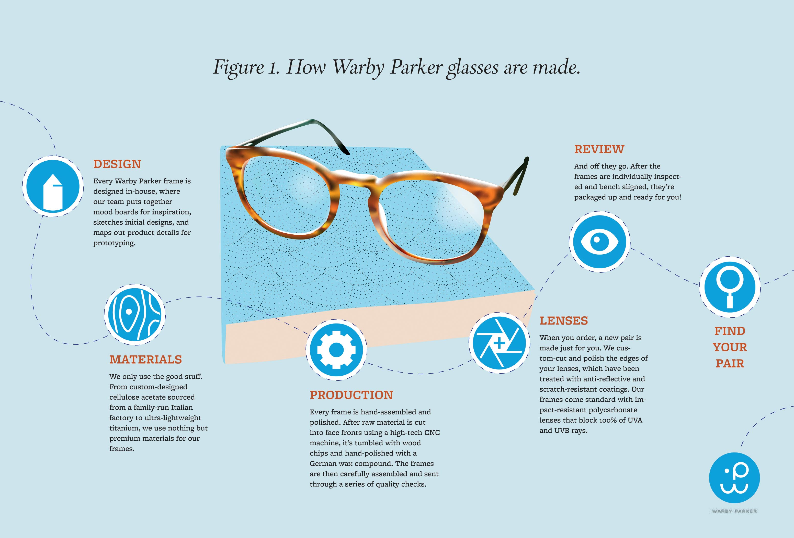

STILL PHOTOGRAPHY











Help Saul get a date!
Charity bachelor auction benefitting the Friends of Literacy.
Katya Rakhmatulina, UC Berkeley environmental engineering Ph.D. student, studies fire and water in Yosemite National Park's Illilouette Basin. Research shows that restoring natural fire regimes to California's mountains could be a win-win: more water, improved biodiversity, and a reduced risk of catastrophic fires.
Dawn James and her son Eli James, 2, discover that living with spina bifida is like finding snowflakes - no two days are ever exactly the same.
| Project |
||||
|---|---|---|---|---|
| CHSA Museum rebrand |
X | X | X | X |
| Warby Parker infographic  |
X | X | ||
Starbucks ad campaign |
X | |||
Enter the Dragon marketing |
X | X | X |
CHALLENGE
Design three type classification posters in the Vox System: two Serif and one Sans Serif font. Research various periods and design from their influence. Visually communicate the evolution of type. Practice the principles of typography
PROCESS
Inspired by Swedish designer Joseef Müller-Brockman's Zurich Tonhalle theatrical poster series, I set out with the goal of not only creating competent infographics, but to imbue each poster's design with its respective typeface's attributes, personality, and history. In other words, I wanted to paint unmistakeable, vivid images with type. Adding an extra challenge -- that I must use all the letters in the typeface's name to create a dominant lead illustration for each poster -- made this project even trickier. Hours of research and experimentation led to many aborted failures. Some typefaces have strong visual aesthetics, but failed to produce any easily recognizable forms relevant to their history. Other typefaces birthed engaging images, but sometimes leaned too far into illustration, or lacked visual cohesion with other candidates.
SOLUTION
I settled on using Busorama (San Serif), Benguiat (Humanist), and Didi (Didone) in the final series. To tell each typeface's story, I selected a movie poster aesthetic (mirroring Müller-Brockman's approach for contemporary entertainment in his era). This meant leading with each typeface's title/illustration as the dominant graphic, giving strong play to a quote (like a tagline), and letting the other pieces recede into the background, using color and scale to treat them like a supporting cast. In the final step, I opted for red-black-white color palette to unify all three posters into a cohesive set.
SOFTWARE
Illustrator | Photoshop
Adam Lau current works as a photographer, filmmaker, and multimedia designer at UC Berkeley’s College of Engineering. He holds an M.A. in Visual Communication from UNC Chapel Hill, where he was a Roy H. Park Fellow. Previously, he worked at the Knoxville News Sentinel, Baton Rouge Advocate, San Francisco Chronicle, and The Associated Press.
SKILLS:
Photography
Film Production
Design
Get in touch. Send me a message:
Berkeley, CA
Phone: +1 510-210-3711
Email: adam@lauvisuals.com